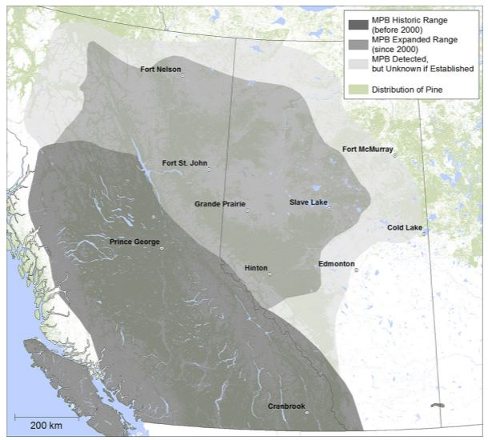
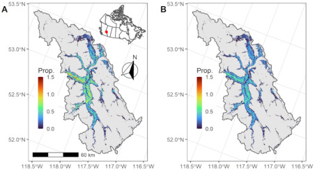

Page 6
Conclusion and Sources
Conclusion. Summarize findings and next steps
The pine beetles are a serious problem because they kill pine trees, increase wildfire risk, damage habitats, and affect the carbon cycle. Warmer temperatures help the beetles survive and spread into new forests. Important next steps include better forest monitoring, removing infected trees early, using treatments like verbenone, and reducing climate change impacts.
Image/Graphic #1

This map shows how mountain pine beetles have spread beyond their historic range since 2000. The expanded range covers much larger areas of western Canada, showing that the beetles are moving into new pine forests. This is important because the spread increases tree death, wildfire risk, and damage to forest ecosystems.
Image/Graphic #2

This image shows areas where mountain pine beetles are spreading and affecting forests in different regions. The colored areas represent the proportion of forests impacted, with brighter colors showing higher levels of infestation. And also shows how good the aerial drones are able to map out which trees are infected and notinfected.